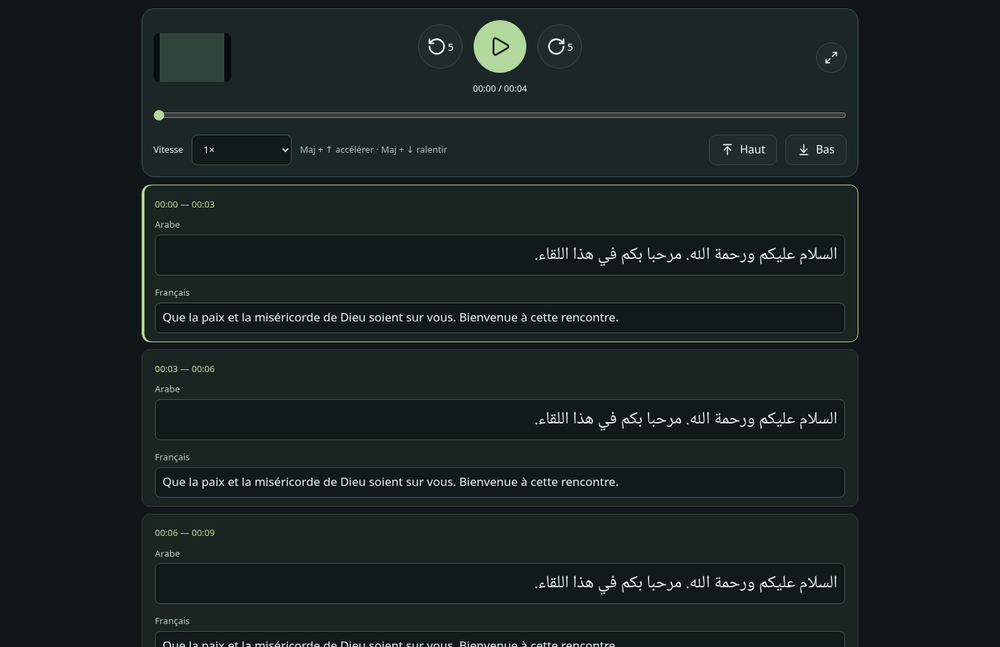
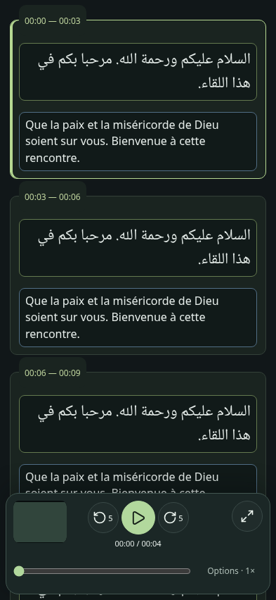
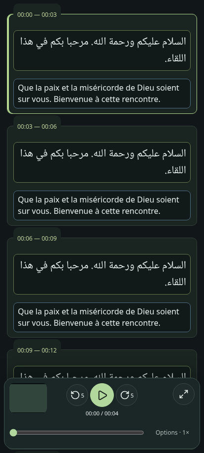
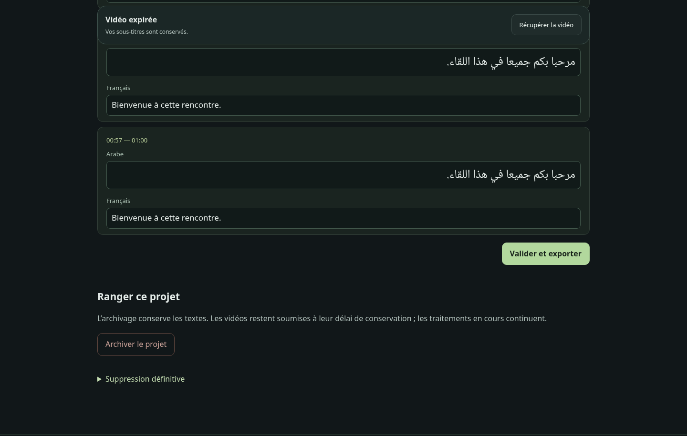
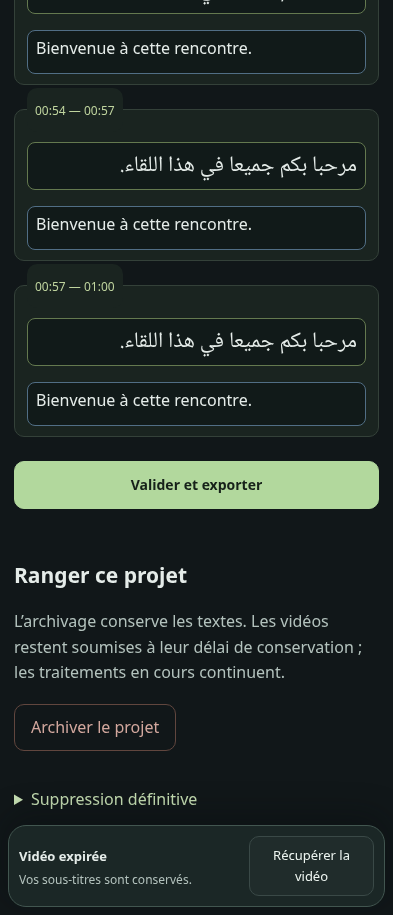
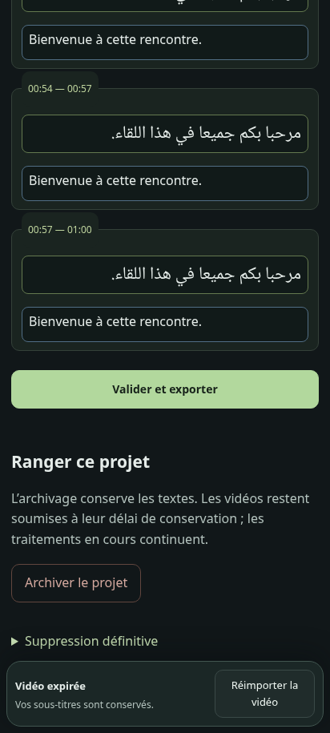

Candidate du 28 septembre 2026, non déployée. Captures Chromium avec données et média synthétiques. Les formats mobiles sont simulés, sans essai sur appareil physique.
Arabe au-dessus du français ; timecodes cliquables de 44 px sur mobile ; champs qui grandissent et rétrécissent avec leur texte. À expiration, le bandeau remplace le lecteur et reste accessible pendant le défilement.





